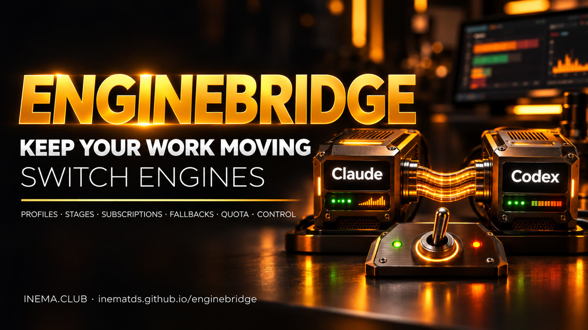
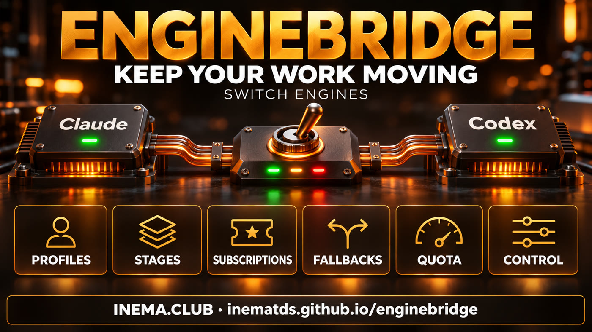

Do your bots and scripts use Claude Code or Codex? Choose the engine for each stage and see when another subscription can take over. Start with the simulation; then integrate your systems.
v1.0.0 · Local core · Integrations pending

Your automation can stop when a subscription reaches its quota, even if another one is available. EngineBridge is a local tool for choosing which AI engine handles each stage and using a declared alternative when allowed. It is for people who maintain bots, scripts, and routines with Claude Code and Codex. You define profiles, models, and effort; the program makes the choice without consulting an AI. Running text tasks requires Python and subscription-authenticated programs.

You can prefer Codex across the system and reserve Claude for review. Each engine keeps its own models and effort settings. A pinned stage switches only to a declared alternative.
The program can suspend the account and choose the next alternative without asking an AI to make that decision. The destination subscription continues to use its own quota. The core does not check balances or guarantee that the other account is available.
A structured quota rejection, before any partial response or tool use, can trigger the declared alternative.
Integrated processes that share the same state stop admitting new work on that account during the suspension.
A timeout, local error, or result rejected by the project stops the attempt. Publications and other external actions require their own verification.
The core resolves policies, runs text tasks through subscription-based programs, and coordinates attempts with a local database. Tests use fake executors and check switching, concurrency, and interruption. OpenPCBotV3, Refazvideo, and cron jobs do not use this library yet. This release does not include real tests of either adapter.
The menor, executor, topo, and super levels reuse the existing central configuration. Low on one model is not equivalent to low on another. Profiles can declare exceptions; combinations should be compared on real tasks using each project's validators.
You do not need this section to understand what came before.
An engine is the program that calls the model. A profile combines an engine, model, and effort. A stage is one part of the work, such as a script or review. A level expresses the work requirements; executor, topo, and super are choices defined in your configuration. A pool is the group that shares the same account quota. MCP is a connection to external tools, disabled in this text executor. A structured rejection is a program-readable error code; free-form error text is not enough to trigger an automatic switch.
Requires Python 3.11+ and PyYAML 6. Resolving the demo profiles does not require login or an available balance. To run tasks, adjust the program paths and use subscription-authenticated accounts.
git clone https://github.com/inematds/enginebridge.git
cd enginebridge
python3 -m venv .venv
source .venv/bin/activate
python3 -m pip install -e .
python3 -m unittest discover -s tests -v
python3 -m enginebridge resolve --project demonstracao --stage roteiroThe first fake executor rejects due to quota. The second receives the request. The output contains simulado: true; its state is kept separate from the default database.
printf 'Escreva um roteiro.' | python3 -m enginebridge --state .state/demo.sqlite run --project demonstracao --stage roteiro --simulate --fail-firstThe config/enginebridge.yaml file brings together the local policy. Inherited levels read ~/.config/inema/modelos.env; the profiles below are explicit exceptions. OpenRouter remains disabled, with no API adapter.
perfis:
codex-principal:
motor: codex
modelo: gpt-6.1-sol
esforco: medium
claude-alternativo:
motor: claude
modelo: claude-opus-5-5
esforco: low
projetos:
demonstracao:
etapas:
roteiro:
perfil: codex-principal
alternativa: claude-alternativo
critica:
perfil: claude-alternativo
alternativa: codex-principalInstall Claude Code and Codex, then sign in with your subscription using the commands below in your terminal. Set binario in the YAML to the installed path. If you use a specific Codex account directory, conta_env points to a file containing only CODEX_HOME=/path/to/account; without that file, the program uses your default account. For a new installation without a central modelos.env, the copy command below creates an example only if the file does not already exist.
codex login
claude auth login
mkdir -p ~/.config/inema
test -f ~/.config/inema/modelos.env || cp config/modelos.example.env ~/.config/inema/modelos.envThe preference changes only this project's YAML and affects future resolutions that do not have a fixed engine. The example uses the padrao stage, which inherits the global engine: the first resolution chooses Claude, and the second chooses Codex. The account is identified by quota_pool; unblocking does not clear a temporary quota suspension.
python3 -m enginebridge prefer claude
python3 -m enginebridge resolve --project demonstracao --stage padrao
python3 -m enginebridge prefer codex
python3 -m enginebridge resolve --project demonstracao --stage padrao
python3 -m enginebridge --state .state/demo.sqlite block --pool codex-principal
python3 -m enginebridge --state .state/demo.sqlite unblock --pool codex-principalThis command uses the quota of the selected subscription. The adapters isolate the working directory, disable shell and personal MCP, and remove API credentials from the environment. Adjust binaries and accounts in the YAML. Local resolution does not verify argument compatibility, login, or model availability.
printf 'Responda com uma frase.' | python3 -m enginebridge run --project demonstracao --stage roteiroFirst, verify a short text task in each subscription-based program. Then adapt two independent text consumers. Only after that, integrate selection into the existing OpenPCBotV3 jobs and runners. Images, translation, tools, and publishing keep their own workflows.